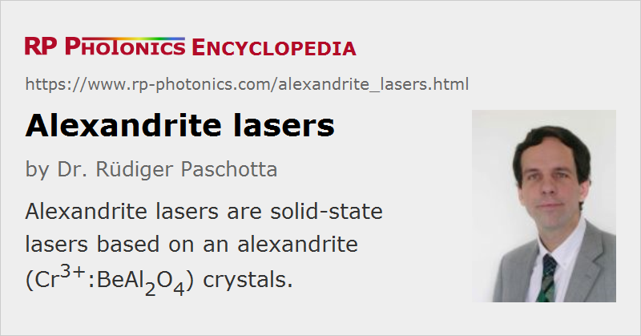

Alexandrite Lasers
Definition: solid-state lasers based on alexandrite (Cr3+:BeAl2O4) crystals
More general term: solid-state lasers
German: Alexandrit-Laser
How to cite the article; suggest additional literature
Author: Dr. Rüdiger Paschotta
Alexandrite lasers are chromium-doped solid-state lasers based on the crystalline gain medium alexandrite, which is Cr3+:BeAl2O4. There are natural alexandrite gem stones, but material for laser crystals is artificially produced and grown in monocrystalline form with high crystal quality, using a modified Czochralski growth method. The laser-active Cr3+ ions substitute aluminum ions in the host crystal; there are two different possible sites for them, but normally most of the ions sit in so-called mirror sites. Emission wavelengths are typically between 0.7 μm and 0.8 μm – in many cases around 0.75 μm, where the maximum laser gain and wall-plug efficiency can be achieved. The large emission bandwidth is typical for transition-metal-doped gain media. It is possible to make broadly wavelength-tunable lasers based on alexandrite, which sometimes reach out to well above 0.8 μm. Alexandrite was one of the first few vibronic laser gain media, discovered in the late 1970s. Note, however, that it can be also used for narrowband lasing on the so-called R line, i.e., not in vibronic mode.
Alexandrite has a orthorhombic crystal structure, having a low symmetry. As a consequence of that, the absorption and gain properties strongly depend on the direction of polarization of light. This together with the strong birefringence of the material makes it easy to obtain linearly polarized emission with low depolarization losses.
The spectroscopic properties of alexandrite are substantially more complicated than those of Nd:YAG, for example – not only due to the directional dependence, but also because of the strong involvement of phonons (quantized lattice vibrations) in the lower laser level. An unusual phenomenon is that the achievable laser gain and efficiency are highest not at low temperatures, but at elevated temperatures of e.g. 100–150 °C. This is caused by the fact that the upper laser level has a slightly higher excitation energy than a long-lived level just below it; therefore, a thermal excitation step is involved in the laser process. As a result, pulsed alexandrite lasers often work better with elevated temperatures of the laser crystal. For continuous-wave lasers, however, the reduced upper-state lifetime at elevated temperatures can degrade the performance. (Note that the upper-state lifetime is less relevant in case of pulsed pumping and rapid energy extraction.)
Another practically important detail is that the emission cross sections of alexandrite are rather small, which leads to a very high saturation fluence. This can make it difficult to efficiently extract the stored energy in a laser crystal; note that the applicable intracavity laser intensities are limited by optical damage. Particularly for pulsed operation well away from the optimum wavelength region around 750 nm, the laser efficiency can be substantially reduced due to that problem.
Although large alexandrite crystals can be fabricated with high optical quality, the effective optical damage threshold for large beam area can be far below the intrinsic damage threshold as can be measured on high-quality spots which are selected for particularly low scattering losses. Usually, optical damage is observed at crystal surfaces, not in the bulk material. The applicable peak intensities or fluence is in pulsed lasers or amplifiers are strongly dependent on the crystal quality. Tentatively, a high crystal quality is more difficult to achieve in combination with a high Cr3+ doping concentration.
Lamp-pumped Alexandrite Lasers
In many cases, roughly 10 cm long cylindrical laser rods with a diameter of e.g. 6.3 mm (1/4 inch) are used and lamp-pumped with one or two xenon flash lamps. Due to the particularly high mechanical and thermo-mechanical strength of the material and its benign thermo-optical properties, very high pump powers can be applied to the flash lamps (often with average powers of several kilowatts) – substantially more than in lamp-pumped Nd:YAG lasers, for example. (One sometimes uses particularly powerful xenon lamps which would be able to fracture a Nd:YAG rod.) Pulse energies of e.g. 1 J or even several joules can be readily obtained with relatively simple laser resonators, which however deliver a relatively poor beam quality – M2 factors of the order of 10 or larger are typically obtained.
It is possible to optimize laser resonators for substantially higher beam quality, but this requires more sophisticated laser resonator designs and normally leads to substantially lower output pulse energies and power conversion efficiencies. It is possible to apply an unstable resonator for obtaining a better trade-off between power efficiency and beam quality, but due to the low emission cross section of alexandrite, this method does not work as well as for some other lasers; one needs to use a relatively low magnification.
In most cases, flash lamps are used; pump pulse energies are typically of the order of hundreds of joules or several kilojoules, and the pulse repetition rate is normally quite low – for example, 10 Hz or 30 Hz. In the easiest case, one uses a free-running laser, producing relatively long pulses, e.g with durations of hundreds of microseconds or even many milliseconds. By far shorter pulse durations of the order of 30 ns or lower can be achieved by active or passive Q switching, where lasing is prohibited for a while, until a substantial amount of energy is stored in the laser crystal, and intends pulse emission begins only then. The possible peak power is much higher in that regime, although the power conversion efficiency is significantly lower. For active Q switching, one would typically use an electro-optic modulator. It is also possible to use cavity dumping in order to achieve even shorter pulse durations of e.g. a few nanoseconds.
Efficient energy extraction is more easily achieved in an amplifier than in a Q-switched laser, because one has better control over the intensity profile (avoiding hot spots, for example). Therefore, the architecture of a master oscillator power amplifier (MOPA) can offer better performance, of course at the cost of a higher complexity. Note that with this approach it is also possible to do spectral filtering between oscillator and amplifier, so that one can obtain and mission with a smaller linewidth.
It is also possible to pump alexandrite lasers with continuously operated Xe or Hg arc lamps, with which one can realize continuous wave operation, but also Q-switched operation with a high pulse repetition rate of e.g. several tens of kilohertz or mode-locked operation.
For particularly high output average powers, a zig-zag slab laser design may be used, where thermally introduced beam distortions are reduced.
End-pumped Alexandrite Lasers
It is also possible to apply the method of end pumping to alexandrite lasers. This has first been tried in the late 1970s, using continuous-wave Nd:YAG lasers as pump sources. End pumping allows one to pump a limited volume of laser crystal material, so that the generated laser beam has a good spatial overlap with the excited volume. It thus becomes substantially easier to obtain a high power conversion efficiency and high beam quality, for example; also, narrowband laser pumping can very much improve the power conversion efficiency. However, the use of a laser instead of one or two lamps for pumping greatly increases the cost of the device. Therefore, this approach is relatively seldom used.
Applications of Alexandrite Lasers
The most important application area of alexandrite lasers is dermatology. For example, such lasers are used for hair removal, for removing tattoos and for treating visible leg veins and pigmented lesions. In the case of hair removal, the light from a long-pulse laser is preferentially absorbed at the hair shafts, and the resulting heat damages these hair shafts and the surrounding hair follicles (selective photothermolysis). By cooling the skin during the treatment, damage to the epidermis is minimized. The short emission wavelength of an alexandrite laser, compared with that of a Nd:YAG laser, is beneficial for removing finer hairs, but increases the risk of skin damage in case of darker skin. (The absorption occurs mostly in melanin, which occurs in hair but also in dark skin, and less in hemoglobin.)
Tattoos can be removed or at least lightened by applying light which can be absorbed by the used ink, which is then chemically transformed and subsequently removed by the body. The short pulse duration obtained with a Q-switched laser favors the preferential heating of small ink particles. In comparison to ruby lasers, the high pulse repetition rates and average power of alexandrite lasers is beneficial for such applications.
In dermatological applications, high intensity pulses from a free-running laser are normally applied to large areas of skin. The high pulse energy and average power allow for a reasonably short treatment time. Due to the large beam area, there are no special requirements on beam quality. This means that relatively simple lasers can be used for such purposes.
The substantial wavelength tunability, which is made possible by the wide emission spectrum of alexandrite, can be exploited in laser spectroscopy. However, in this application area alexandrite lasers are not often used, partly because titanium–sapphire lasers offer much broader tunability in that wavelength region and also exhibit much larger transition cross sections, which can be advantageous in various respects.
Suppliers
The RP Photonics Buyer's Guide contains 5 suppliers for alexandrite lasers.
Questions and Comments from Users
Here you can submit questions and comments. As far as they get accepted by the author, they will appear above this paragraph together with the author’s answer. The author will decide on acceptance based on certain criteria. Essentially, the issue must be of sufficiently broad interest.
Please do not enter personal data here; we would otherwise delete it soon. (See also our privacy declaration.) If you wish to receive personal feedback or consultancy from the author, please contact him e.g. via e-mail.
By submitting the information, you give your consent to the potential publication of your inputs on our website according to our rules. (If you later retract your consent, we will delete those inputs.) As your inputs are first reviewed by the author, they may be published with some delay.
Bibliography
| [1] | R. C. Morris and C. F. Cline, U.S. Patent 3 997 853, Dec. 14, 1976 |
| [2] | C. F. Cline et al., “Physical properties of BeAl2O4 single crystals”, J. Materials Sci. 14, 941 (1979), doi:10.1007/BF00550725 |
| [3] | J. C. Walling et al., “Tunable alexandrite lasers”, IEEE J. Quantum Electron.16 (2), 1302 (1980), doi:10.1109/JQE.1980.1070430 |
| [4] | S. Guch and C. E. Jones, “Alexandrite-laser performance at high temperature”, Opt. Lett. 7 (12), 608 (1982), doi:10.1364/OL.7.000608 |
| [5] | J. C. Walling et al., “Tunable alexandrite lasers: development and performance”, IEEE J. Quantum Electron.QE 21 (10), 1568 (1985), doi:10.1109/JQE.1985.1072544 |
| [6] | D. J. Harter and J. C. Walling, “Low-magnification unstable resonators used with ruby and alexandrite lasers”, Opt. Lett. 11 (11), 706 (1986), doi:10.1364/OL.11.000706 |
| [7] | V. Wulfmeyer et al., “Injection-seeded alexandrite ring laser: performance and application in a water-vapor differential absorption lidar”, Opt. Lett. 20 (6), 638 (1995), doi:10.1364/OL.20.000638 |
| [8] | A. Hariharan et al., “Alexandrite-pumped alexandrite regenerative amplifier for femtosecond pulse amplification”, Opt. Lett. 21 (2), 128 (1996), doi:10.1364/OL.21.000128 |
| [9] | V. Wulfmeyer and J. Bösenberg, “Single-mode operation of an injection-seeded alexandrite ring laser for application in water-vapor and temperature differential absorption lidar”, Opt. Lett. 21 (15), 1150 (1996), doi:10.1364/OL.21.001150 |
| [10] | A. Teppitaksak et al., “High efficiency >26 W diode end-pumped Alexandrite laser”, Opt. Express 22 (13), 16386 (2014), doi:10.1364/OE.22.016386 |
See also: chromium-doped gain media, vibronic lasers, ruby lasers, solid-state lasers, lamp-pumped lasers, titanium–sapphire lasers
and other articles in the category lasers
|  |
If you like this page, please share the link with your friends and colleagues, e.g. via social media:
These sharing buttons are implemented in a privacy-friendly way!